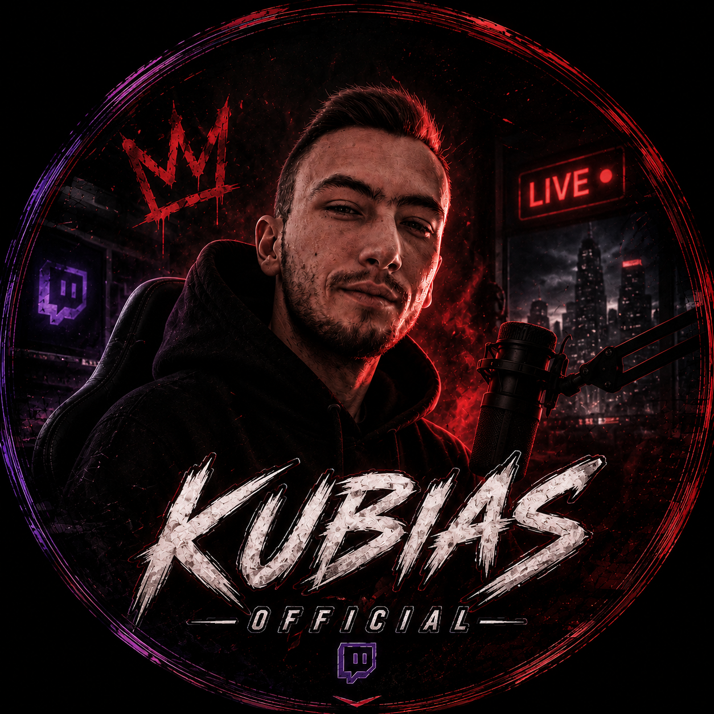

ZÁKULISÍ / KUBIASARMY
◷ Praha · Europe/PragueKaždý večer začíná plánem.
Program, komunita a další příběh. Všechno na jednom místě.
Načítám nastavení…
Účet a přístup
Zatím nejsi přihlášený.
VŠECHNO POD KONTROLOU

KUBIASTVŮJ PROSTOR PRO STREAMProgram, komunita a další příběh. Všechno na jednom místě.
Načítám nastavení…
Zatím nejsi přihlášený.